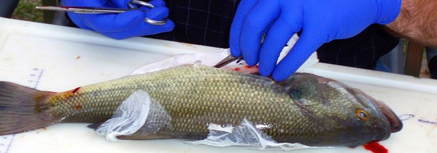
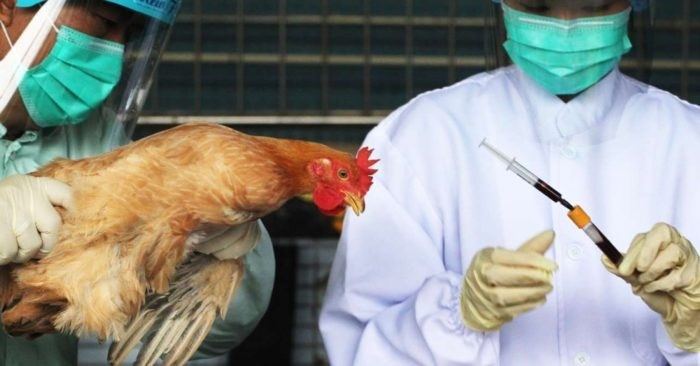

Experimentación animal
Se usan animales no humanos en laboratorios para varios propósitos. Algunos ejemplos de experimentación animal incluyen el testado de productos, el uso de animales como modelos de investigación y como herramientas educativas. Dentro de cada una de estas categorías puede haber también muchos propósitos diferentes por los que se usan. Por ejemplo, algunos son usados como herramientas para investigación militar o biomédica; algunos, para probar cosméticos y productos de limpieza del hogar; y algunos se usan en clases de disección para enseñar a adolescentes la anatomía de las ranas o para realizar una tesis doctoral.
La experimentación animal es un método científico que tiene como objetivo el empleo de uso de animales para experimentos científicos. No es método recomendado siempre que existan alternativas en experimentación con el mismo nivel de evidencia científica, pero en determinados casos es necesario su uso ya que no puede realizarse los experimentos con humanos. La mayoría de los animales utilizados para la investigación son la raza con el propósito específico de pruebas y pocos animales utilizados para experimentación son criados en el medio silvestre.
En la experimentación animal se emplean animales para la investigación básica, como los estudios de comportamiento y genética, mientras que otros ensayos con animales se lleva a cabo en beneficio de los seres humanos.
El principal inconveniente del uso de animales de experimentación es el uso en sí de los animales, los potenciales daños que se les infringe y el dolor físico y psíquico que pueden sufrir. Descartar el uso total de animales de experimentación no es actualmente posible por lo que los avances deben ir encaminados en disminuir su uso y combinarlos con técnicas alternativas como programas informáticos y uso de tejidos, así como instar a los políticos a endurecer la legislación que regula el uso de estos animales, además de seguir creando comités que se cercioren del buen manejo de estos animales y prohibir técnicas dolorosas o la repetición de experimentos ya realizados.
Los animales usados en experimentación se usan por su similitud con el ser humano, las enfermedades que sufrimos son muy similares a la de ellos, por lo que todo lo estudiado para nosotros se ha aplicado a la veterinaria. Todos los avances médicos y veterinarios no habrían sido posibles (desgraciadamente) sin estos animales. Por lo que se debe seguir invirtiendo en aquellos grupos científicos que abogan por el fin, en un futuro, del uso de animales de experimentación y, mientras tanto, seguir luchando porque los animales "en cubetas" no sufran en absoluto.
Inicios de la experimentacion animal
El uso de animales para la experimentación no es un hecho actual, estas técnicas se vienen realizando desde mucho antes de la Grecia Clásica, en concreto desde la Prehistoria, evidencia de ello son los dibujos que pueden observarse del interior de los animales en las cuevas, realizados por los antiguos Homo sapiens. El primer experimentador del que se tiene constancia fue Acmaeon de Crotona, que en el año 450 a.C. seccionó el nervio óptico, provocando la ceguera en un animal. Otros ejemplos de experimentadores antiguos son Alejandría Herófilo (330-250 a.C.) que mostró la diferencia funcional entre nervios y tendones usando animales, o Galeno (130-210 d.C.) que practicó técnicas de disección, mostrando no sólo la anatomía de ciertos órganos, sino también sus funciones.
